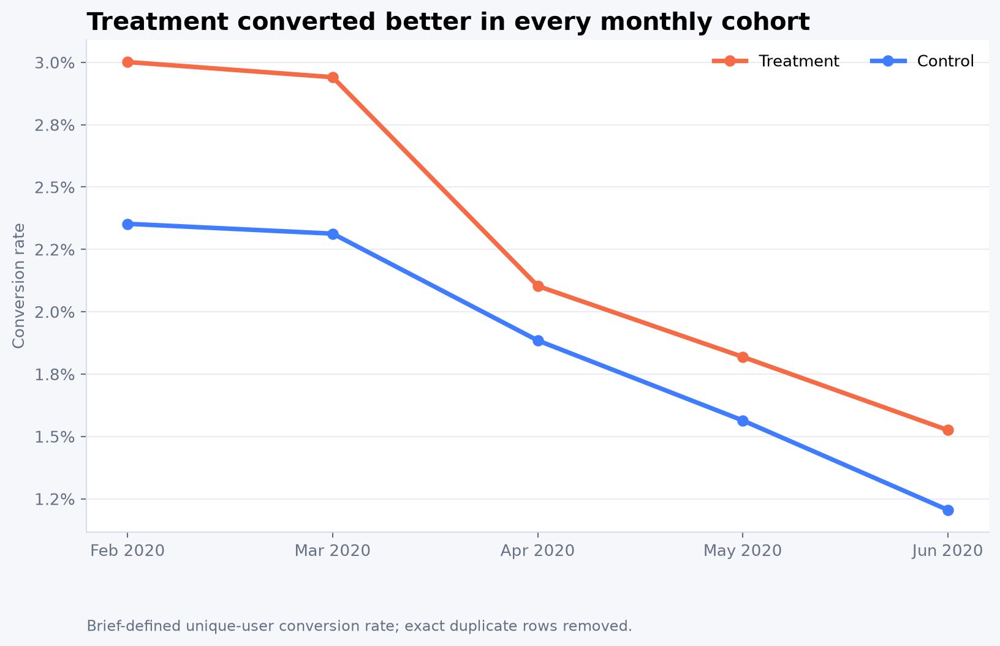

Treatment stayed above control
Conversion declined in both arms from February to June, but the treatment-control gap remained positive.

The required unique-user KPI shows a 13.9% lift. A user-cohort sensitivity view is smaller, near 5.5%, because assignment can change across months.
Conversion declined in both arms from February to June, but the treatment-control gap remained positive.

Descriptive segmentation, ordered by relative uplift.
The headline changes when repeated users are represented at a different level. This is the key analytical caveat.